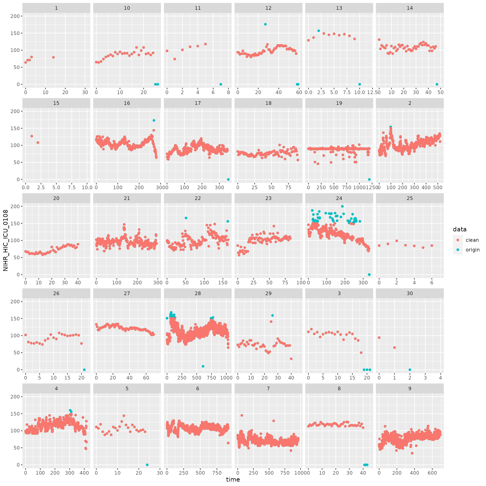

Data cleaning and wrangling with cleanEHR
David Perez Suarez & Sinan Shi
2021-07-11
Source:vignettes/data_clean.Rmd
data_clean.RmdPreparation
data.table package is the backbone of cleanEHR package. You can find in the above link some useful information and tutorial, if you are not familiar with data.table.
Inspect individual episode
There are 263 fields which covers patient demographics, physiology, laboratory, and medication information. Each field has 2 labels, NHIC code and short name. There is a function lookup.items() to look up the fields you need. lookup.items() function is case insensitive and allows fuzzy search.
# searching for heart rate
lookup.items('heart') # fuzzy search
+-------------------+--------------+--------------+--------+-------------+
| NHIC.Code | Short.Name | Long.Name | Unit | Data.type |
+===================+==============+==============+========+=============+
| NIHR_HIC_ICU_0108 | h_rate | Heart rate | bpm | numeric |
+-------------------+--------------+--------------+--------+-------------+
| NIHR_HIC_ICU_0109 | h_rhythm | Heart rhythm | N/A | list |
+-------------------+--------------+--------------+--------+-------------+
Non-longitudinal Data
ccd_demographic_table() can generate a data.table that contains all the non-longitudinal variables. A demonstration of how to do some work on a subset of data.
# contains all the 1D fields i.e. non-longitudinal
tb1 <- ccd_demographic_table(ccd)
# filter out all dead patient. (All patients are dead in the dataset.)
tb1 <- tb1[DIS=="D"]
# subset variables we want (ARSD = Advanced respiratory support days,
# apache_prob = APACHE II probability)
tb <- tb1[, c("SEX", "ARSD", "apache_prob"), with=FALSE]
tb <- tb[!is.na(apache_prob)]
# plot
library(ggplot2)
ggplot(tb, aes(x=apache_prob, y=ARSD, color=SEX)) + geom_point()Longitudinal data
Longitudinal table structure: ccTable
To deal with longitudinal data, we need to first to transform it into a table format. cleanEHR provides a refclass ccTable. There are several key components in the ccTable structure.
-
torigin: theccRecorddataset will be converted into a table format, where each row is a data point and each column is a field and pivoted bytime,site, andeipisode_id. -
tclean: Same structure like thetoriginbut the values are modified with the cleaning process. - filters:
filter_range,filter_categories,filter_nodata,filter_missingness. - imputation: filling missing data.
Create a cctable
First we need to prepare a simple YAML configuration file. YAML is a human freindly data serialization standard, see YAML. The first level item is CCHIC code, see lookup.items(). We suggest users to write the short name and long name (dataItem) to avoid confusion, though the both names will not be taken into account in the process. We selected three items, heart rate (longitudinal), Systolic arterial blood pressure (longitudinal), and sex (non-longitudinal).
# To prepare a YAML configuration file like this. You write the following text
# in a YAML file.
conf <- "
NIHR_HIC_ICU_0108:
shortName: hrate
NIHR_HIC_ICU_0112:
shortName: bp_sys_a
dataItem: Systolic Arterial blood pressure - Art BPSystolic Arterial blood pressure
NIHR_HIC_ICU_0093:
shortName: sex
"
library(yaml)
conf <- yaml.load(conf)
# conf is the full path of the YAML configuration.
tb <- create_cctable(ccd, conf, freq=1)
print(tb$torigin) # the table## time NIHR_HIC_ICU_0108 NIHR_HIC_ICU_0112 NIHR_HIC_ICU_0093 site
## 1: 0 64 NA F pseudo_site
## 2: 1 71 NA F pseudo_site
## 3: 2 71 NA F pseudo_site
## 4: 3 80 NA F pseudo_site
## 5: 4 NA NA F pseudo_site
## ---
## 7932: 690 NA NA M pseudo_site
## 7933: 691 88 NA M pseudo_site
## 7934: 692 NA NA M pseudo_site
## 7935: 693 NA NA M pseudo_site
## 7936: 694 NA NA M pseudo_site
## episode_id NIHR_HIC_ICU_0112.meta
## 1: 1 NA
## 2: 1 NA
## 3: 1 NA
## 4: 1 NA
## 5: 1 NA
## ---
## 7932: 9 NA
## 7933: 9 NA
## 7934: 9 NA
## 7935: 9 NA
## 7936: 9 NAIn this table we can find the following columns,
- time: number of hours from the unit admission. Since we set the
freq=1, the cadence between rows is always 1 hour. - site, episode_id: combine these two columns will give you a unique admission.
- fields: three selected fields.
- extra fields: depending on the variable we choose, some extra information are given.
Get the mean heart rate of each patient.
## site episode_id V1
## 1: pseudo_site 1 73.00000
## 2: pseudo_site 10 80.70370
## 3: pseudo_site 11 87.57143
## 4: pseudo_site 12 95.61667
## 5: pseudo_site 13 130.09091
## 6: pseudo_site 14 105.70833
## 7: pseudo_site 15 117.50000
## 8: pseudo_site 16 105.20727
## 9: pseudo_site 17 88.40719
## 10: pseudo_site 18 76.52222
## 11: pseudo_site 19 89.50845
## 12: pseudo_site 2 103.14615
## 13: pseudo_site 20 72.02439
## 14: pseudo_site 21 95.60274
## 15: pseudo_site 22 100.34416
## 16: pseudo_site 23 98.48810
## 17: pseudo_site 24 123.16566
## 18: pseudo_site 25 86.85714
## 19: pseudo_site 26 87.63636
## 20: pseudo_site 27 121.37143
## 21: pseudo_site 28 111.96195
## 22: pseudo_site 29 75.40000
## 23: pseudo_site 3 87.31818
## 24: pseudo_site 30 53.00000
## 25: pseudo_site 4 114.60386
## 26: pseudo_site 5 102.20000
## 27: pseudo_site 6 107.87650
## 28: pseudo_site 7 70.40595
## 29: pseudo_site 8 109.84091
## 30: pseudo_site 9 78.71179
## site episode_id V1
Data cleaning with ccTable
Numerical range filter
The numerical range filter can only be applied on variables. We envisaged three different cases for the numerical ranges – values that are impossible, e.g. negative heart rate; possible but unlikely, e.g. heart rate of 200; within a normal range. The filter will label all these scenarios using “red”, “amber”, “green” respectively. The definition of these ranges can be configured by users based on their judgement and the purpose of research. Note, from “red” to “green”, the next range must be a subset of the previous range.
In the following section, we would like to apply a range filter to heart rate by modifying the previous YAML configuration file.
conf <- "NIHR_HIC_ICU_0108:
shortName: h_rate
dataItem: Heart rate
range:
labels:
red: (0, 300)
amber: (11, 150]
green: (50, 100]
apply: drop_entry
NIHR_HIC_ICU_0112:
shortName: bp_sys_a
dataItem: Systolic Arterial blood pressure - Art BPSystolic Arterial blood pressure
NIHR_HIC_ICU_0093:
shortName: sex
category:
M: male
F: female
m: male
f: female
"
conf <- yaml.load(conf)
tb <- create_cctable(ccd, conf, freq=1)
tb$filter_range("amber") # chose only the entry with amber
tb$apply_filters() # apply the filter to the clean tableNow let’s see the effect on the cleaned data tclean
cptb <- rbind(cbind(tb$torigin, data="origin"),
cbind(tb$tclean, data="clean"))
ggplot(cptb, aes(x=time, y=NIHR_HIC_ICU_0108, color=data)) +
geom_point(size=1.5) + facet_wrap(~episode_id, scales="free_x")
In the case of changing the filter range from amber to green,
#tb$reset() # reset the all the filters first.
tb$filter_range("green")
tb$apply_filters()
cptb <- rbind(cbind(tb$torigin, data="origin"),
cbind(tb$tclean, data="clean"))
ggplot(cptb, aes(x=time, y=NIHR_HIC_ICU_0108, color=data)) +
geom_point(size=1.5) + facet_wrap(~episode_id, scales="free_x")Categorical data filter
The purpose of categorical data filter is to remove the unexpected categorical data. We can extend the previous configuration file as such,
conf <- "NIHR_HIC_ICU_0108:
shortName: h_rate
dataItem: Heart rate
NIHR_HIC_ICU_0112:
shortName: bp_sys_a
dataItem: Systolic Arterial blood pressure - Art BPSystolic Arterial blood pressure
NIHR_HIC_ICU_0093:
shortName: sex
category:
levels:
M: male
F: female
m: male
f: female
apply: drop_entry
"
conf <- yaml.load(conf)
# Try to modify the original data
tb$torigin$NIHR_HIC_ICU_0093[1] <- "ERROR"
tb$reload_conf(conf) # change configuration file
tb$filter_categories()
tb$apply_filters() There is one error gender introduced in the sex field. After the filtering process, the error entry is substitute by NA.
unique(tb$torigin$NIHR_HIC_ICU_0093)## [1] "ERROR" "F" "M"
unique(tb$tclean$NIHR_HIC_ICU_0093)## [1] NA "F" "M"Missingness filter
In some cases, we wish to exclude episodes where the data is too scarce. There are three components in the missingness filter. In the following example, we arbitrarily name the filter “daily”. We gave 24 hours interval and 70% accepting rate. It is to say in any 24 hours interval, if the heart rate missing rate is higher than 30%, we will exclude the entire episode. Note, the unit labels: daily: 24 number of rows instead of hours. It represents 24 hours because the cadence of the ccTable is 1 hour.
conf <- "NIHR_HIC_ICU_0108:
shortName: h_rate
dataItem: Heart rate
missingness:
labels:
daily: 24
accept_2d:
daily: 70
apply: drop_episode
NIHR_HIC_ICU_0112:
shortName: bp_sys_a
dataItem: Systolic Arterial blood pressure - Art BPSystolic Arterial blood pressure
NIHR_HIC_ICU_0093:
shortName: sex
"
conf <- yaml.load(conf)
tb$reload_conf(conf) # change configuration file
tb$filter_missingness()
tb$apply_filters()
# episodes in the original data table
unique(paste(tb$torigin$site, tb$torigin$episode_id))## [1] "pseudo_site 1" "pseudo_site 10" "pseudo_site 11" "pseudo_site 12"
## [5] "pseudo_site 13" "pseudo_site 14" "pseudo_site 15" "pseudo_site 16"
## [9] "pseudo_site 17" "pseudo_site 18" "pseudo_site 19" "pseudo_site 2"
## [13] "pseudo_site 20" "pseudo_site 21" "pseudo_site 22" "pseudo_site 23"
## [17] "pseudo_site 24" "pseudo_site 25" "pseudo_site 26" "pseudo_site 27"
## [21] "pseudo_site 28" "pseudo_site 29" "pseudo_site 3" "pseudo_site 30"
## [25] "pseudo_site 4" "pseudo_site 5" "pseudo_site 6" "pseudo_site 7"
## [29] "pseudo_site 8" "pseudo_site 9"## [1] "pseudo_site 10" "pseudo_site 11" "pseudo_site 12" "pseudo_site 13"
## [5] "pseudo_site 14" "pseudo_site 15" "pseudo_site 16" "pseudo_site 17"
## [9] "pseudo_site 18" "pseudo_site 19" "pseudo_site 2" "pseudo_site 20"
## [13] "pseudo_site 21" "pseudo_site 22" "pseudo_site 23" "pseudo_site 24"
## [17] "pseudo_site 25" "pseudo_site 26" "pseudo_site 27" "pseudo_site 28"
## [21] "pseudo_site 29" "pseudo_site 3" "pseudo_site 30" "pseudo_site 4"
## [25] "pseudo_site 5" "pseudo_site 6" "pseudo_site 7" "pseudo_site 8"
## [29] "pseudo_site 9"Nodata filter
Similarly, we can setup the no data filter as following. Here it means, drop the entire episode if no hear rate data is found.
Run all filters together
To wrap up, we can put all the above stated filter configurations together in the YAML file and run the filter together.
conf <- "NIHR_HIC_ICU_0108:
shortName: h_rate
dataItem: Heart rate
range:
labels:
red: (0, 300)
amber: (11, 150]
green: (50, 100]
apply: drop_entry
missingness:
labels:
daily: 24
accept_2d:
daily: 70
apply: drop_episode
nodata:
apply: drop_episode
NIHR_HIC_ICU_0112:
shortName: bp_sys_a
dataItem: Systolic Arterial blood pressure - Art BPSystolic Arterial blood pressure
NIHR_HIC_ICU_0093:
shortName: sex
category:
levels:
M: male
F: female
m: male
f: female
apply: drop_entry
"
conf <- yaml.load(conf)
# Method 1
tb <- create_cctable(ccd, conf, freq=1)
tb$filter_range("amber")
tb$filter_missingness()
tb$filter_nodata()
tb$filter_categories()
tb$apply_filters()
tb$reset() # reset
# Method 2
#tb$clean()Imputation
We provide the impute() to interpolate the missing data. For each missing value, the interpolation will be only based on the nearby values which are specified by lead and lag arguments. lead suggests the number of previous values and lag suggests the number of later values. The corresponding time will be related to the freq you set for the ccTable, e.g. lead: 2 means previous 4 hours when freq=0.5. One can also set the fun to determine the interpolation function. The imputation step usually should be carried out after filtering, otherwise imputation will take values that are out of range its into account.
One needs to be always careful when impute the data to make the best trade-off between usefulness and correctness. The interpolation methods should be carried out wisely based on the characteristics of the variable. A good overview of how to deal with the missing data can be found (Salagodo et al. 2016) If you are not sure about the characteristics of the variable, we would suggest you to keep the window size small and use median as the interpolation function.
# Initialise the simulated ccRecord
hr <- c(rep(80, 10), rep(NA, 10), rep(90, 10), NA, NA, rep(90, 10), rep(NA, 10), 180, NA, NA,
rep(90, 10), 180, NA, 0, NA, NA, rep(60, 10))
# hr <- hr + runif(length(hr)) * 15 # adding noise if needed.
data <- data.frame(time=as.numeric(seq(hr)), item2d=hr)
rec <- ccRecord()+new.episode(list(NIHR_HIC_ICU_0108=data))
# Prepare the plotting function
library(data.table)
plot_imputation <- function() {
cptb <- data.table(episode_id=as.integer(tb$torigin$episode_id),
time=tb$torigin$time, origin=tb$torigin$NIHR_HIC_ICU_0108,
clean=tb$tclean$NIHR_HIC_ICU_0108)
ggplot(cptb, aes(x=time)) +
geom_point(size=5, shape=16, aes(y=origin), colour="red") +
geom_point(size=2, aes(y=clean)) +
geom_line(aes(y=clean)) +
scale_x_continuous(minor_breaks = seq(length(hr)))+
theme(panel.grid.minor = element_line(colour="grey", size=0.5),
panel.grid.major = element_line(colour="grey", size=0.5))
}Example 1: median interpolation with a window [-2, 2]
# mock the configuration YAML
conf <- "NIHR_HIC_ICU_0108:
shortName: h_rate
dataItem: Heart rate
missingness:
impute:
lead: 2 # 2 previous values
lag: 2 # 2 later values
fun: median # missing value filled by the median of 2 previous and 2 later values.
nodata:
apply: drop_episode
"
conf <- yaml.load(conf)
tb <- create_cctable(rec, conf, freq=1)
tb$imputation()
plot_imputation()Example 2: increase the window size to [-10, 10] We can increase the window size to fill more data,
conf <- "NIHR_HIC_ICU_0108:
shortName: h_rate
dataItem: Heart rate
missingness:
impute:
lead: 10
lag: 10
fun: median
nodata:
apply: drop_episode
"
rec <- ccRecord()+new.episode(list(NIHR_HIC_ICU_0108=data))
conf <- yaml.load(conf)
tb <- create_cctable(rec, conf, freq=1)
tb$imputation()
plot_imputation()Example 3: use mean as the interpolation function.
conf <- "NIHR_HIC_ICU_0108:
shortName: h_rate
dataItem: Heart rate
missingness:
impute:
lead: 10
lag: 10
fun: mean
nodata:
apply: drop_episode
"
rec <- ccRecord()+new.episode(list(NIHR_HIC_ICU_0108=data))
conf <- yaml.load(conf)
tb <- create_cctable(rec, conf, freq=1)
tb$imputation()
plot_imputation()Advanced Example: Use a self-defined function.
conf <- "NIHR_HIC_ICU_0108:
shortName: h_rate
dataItem: Heart rate
missingness:
impute:
lead: 40
lag: 40
fun: myfun
nodata:
apply: drop_episode
"
# Define my own interpolation function.
# We use piecewise polynomial interpolation spline here for
# the demonstration purpose.
myfun <- function(x) {
return(splinefun(x)(ceiling(length(x)/2)))
}
conf <- yaml.load(conf)
tb <- create_cctable(rec, conf, freq=1)
tb$imputation()
plot_imputation()